<meta charset="utf-8"><title>11/16のコラム note貼り付け</title>
<style>
/* one column of numbered paste steps; text steps vs image steps differ by marker */
:root{--bg:#F5F4F0;--card:#FFFFFF;--ink:#1D2321;--mute:#5F665F;--line:#DCDAD2;--btn:#1F5FBF;--btnok:#2E8B4F;--img:#E9F3EC;--imgink:#22663B;--sans:'IBM Plex Sans JP','Hiragino Sans','Noto Sans JP',sans-serif}
@media (prefers-color-scheme:dark){:root:not([data-theme="light"]){--bg:#171A19;--card:#202423;--ink:#ECEDE8;--mute:#A3AAA2;--line:#343937;--btn:#4D8BE6;--btnok:#3FA866;--img:#1E2C23;--imgink:#8FD3A6;color-scheme:dark}}
:root[data-theme="dark"]{--bg:#171A19;--card:#202423;--ink:#ECEDE8;--mute:#A3AAA2;--line:#343937;--btn:#4D8BE6;--btnok:#3FA866;--img:#1E2C23;--imgink:#8FD3A6;color-scheme:dark}
body{background:var(--bg);color:var(--ink);font-family:var(--sans);font-size:15px;line-height:1.75;padding:20px 16px 60px}
main{max-width:680px;margin:0 auto;display:grid;gap:28px}
header h1{font-size:22px;margin:0 0 6px;text-wrap:balance}
header p{margin:0;color:var(--mute);font-size:14px}
nav{display:flex;gap:8px;flex-wrap:wrap;margin-top:12px}
nav a{border:1px solid var(--line);border-radius:999px;padding:4px 14px;color:var(--ink);text-decoration:none;font-size:14px;background:var(--card)}
.part h2{font-size:18px;line-height:1.5;margin:0 0 12px;text-wrap:balance;display:flex;gap:10px;align-items:baseline;flex-wrap:wrap}
.tag{font-size:13px;background:var(--ink);color:var(--bg);border-radius:6px;padding:1px 9px}
.steps{list-style:none;margin:0;padding:0;display:grid;gap:12px}
.st{background:var(--card);border:1px solid var(--line);border-radius:12px;padding:12px;min-width:0}
.hd{display:flex;align-items:center;gap:8px;margin-bottom:8px}
.no{width:26px;height:26px;border-radius:50%;background:var(--btn);color:#fff;display:inline-flex;align-items:center;justify-content:center;font-size:13px;font-weight:700;flex:0 0 26px}
.im .no{background:var(--btnok)}
.hd em{font-style:normal;font-size:12px;background:var(--img);color:var(--imgink);border-radius:6px;padding:0 8px}
.bx{font-size:13.5px;line-height:1.7;border:1px solid var(--line);border-radius:8px;padding:8px 10px;max-height:110px;overflow:auto;overflow-wrap:anywhere}
.bx.tall{max-height:150px}.bx p{margin:0 0 6px}.bx h2{font-size:14px;margin:8px 0 4px}.bx a{color:var(--btn)}
.st img{display:block;width:100%;max-width:100%;border:1px solid var(--line);border-radius:8px}
.sub{font-size:12.5px;color:var(--mute);margin:6px 0 0}
.cp{width:100%;margin-top:8px;padding:12px;border:0;border-radius:10px;background:var(--btn);color:#fff;font:600 15px var(--sans);cursor:pointer}
.cp.ok{background:var(--btnok)}.cp.dl{background:var(--btnok)}.cp:focus-visible{outline:3px solid var(--ink);outline-offset:2px}
.xh{font-size:15px;margin:20px 0 10px}
.fb{font-size:13px;line-height:1.7;margin:8px 0 0;padding:8px 10px;border-radius:8px;background:var(--img);color:var(--imgink)}
.opts{display:grid;grid-template-columns:repeat(auto-fill,minmax(240px,1fr));gap:10px}
.opt{min-width:0}.opt img{display:block;width:100%;border:1px solid var(--line);border-radius:8px}
.ol{display:flex;align-items:center;gap:8px;margin-top:6px}.ol b{font-size:13px;flex:0 0 auto}.ol .on{font-size:12.5px;color:var(--mute);flex:1;min-width:0}.ol .cp{width:auto;flex:0 0 auto;padding:9px 14px}.ol .cp{margin:0;padding:9px}
.toast{font-size:13px;color:var(--mute);margin-top:6px}
</style>
<main><header><h1>11/16のコラム note貼り付け</h1><p>いま公開済みは9本です。青い番号は文章、緑は画像です。</p><nav><a href="#p1">1</a><a href="#p2">2</a><a href="#p3">3</a><a href="#p4">4</a><a href="#p5">5</a><a href="#p6">6</a><a href="#p7">7</a><a href="#p8">8</a><a href="#p9">9</a></nav></header><section class="part" id="p1"><h2><span class="tag">OFF GRID</span>サインツ「15位か17位かは気にしない」　ウィリアムズはテスト役に</h2><p class="sub">サイトに公開：12:20</p><ol class="steps">
<li class="st im"><div class="hd"><span class="no">1</span><b>見出し画像</b><em>画像</em></div>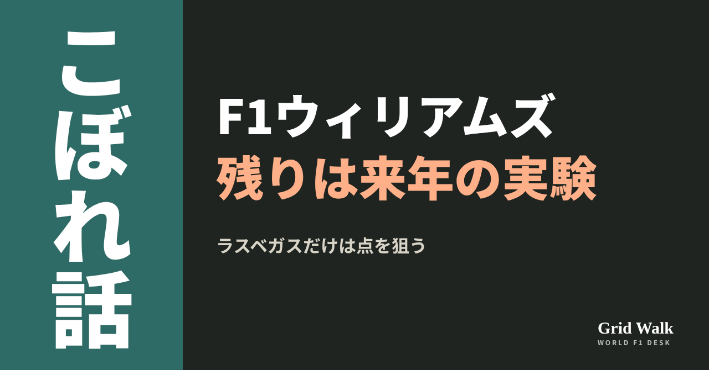<button class="cp dl" data-img="img/williams-sainz-albon-test-drivers-20261116.png" data-name="williams-sainz-albon-test-drivers-20261116_見出し画像.png">ダウンロード</button></li>
<li class="st"><div class="hd"><span class="no">2</span><b>タイトル</b></div><div class="bx" id="p1t">サインツ「15位か17位かは気にしない」　ウィリアムズはテスト役に</div><button class="cp" data-plain="p1t">タイトルをコピー</button></li>
<li class="st"><div class="hd"><span class="no">3</span><b>本文</b></div><div class="bx tall" id="p1r"><p>今季の終盤、自分はテストドライバーなのか。イギリスのThe Raceにそう聞かれて、ウィリアムズのカルロス・サインツは、あっさり認めました。</p><p>元の記事へのリンクと、サインツの今季を追った読み解きへの案内はサイトで → <a href="https://f1gridwalk.github.io/lens/williams-sainz-albon-test-drivers-20261116/?utm_source=note&amp;utm_campaign=williams-sainz-albon-test-drivers-20261116">https://f1gridwalk.github.io/lens/williams-sainz-albon-test-drivers-20261116/?utm_source=note&amp;utm_campaign=williams-sainz-albon-test-drivers-20261116</a></p><blockquote><p>「そうだよ。チームにも、15位で終わるか17位で終わるかは気にしないと伝えてある」「それより、僕がどれだけ学べるか、チームがどれだけ学べるかなんだ」（サインツ、The Race／イギリス）</p></blockquote><p>The Raceは11月15日の記事で、サインツとアレクサンダー・アルボンを、おそらく世界一実力がありすぎるテストドライバーと書きました。ウィリアムズは今季最後の何戦かの一部を、2027年のクルマの開発に差し出しているといいます。F1公式によると、ウィリアムズはサンパウロGPを終えてコンストラクターズ9位、12点です。サイトの要約は https://f1gridwalk.github.io/news/en-therace-williams-sainz-albon-test-drivers/ にあります。</p><h2>金曜日は、来年のための実験室</h2><p>記事によると、10月のアメリカGPの1回目のフリー走行で、ウィリアムズはほかのどのチームとも違う走り方をしました。ハードタイヤでアウトラップを走り、次の周は第2セクターまでだけを速く走って、コントロールラインの手前でピットに戻る。これをアルボンが4回、サインツが5回。アルボンは、ミディアムでの速い周回が走路外走行で取り消され、トップから40.416秒遅れで終えています。</p><blockquote><p>「本格的なセットアップの試験をやっている。僕自身がこのクルマとチームを知って、経験を積むためでもある」（サインツ、The Race／イギリス）</p></blockquote><blockquote><p>「工場でやっているシミュレーターの作業でさえ、今年のクルマにはほとんど時間を使っていない」（アルボン、The Race／イギリス）</p></blockquote><p>テクニカルディレクターのマット・ハーマンは、こう話しています。</p><blockquote><p>「モデルの真ん中にいるのはとても簡単だ。でも、端まで行こうとしないといけないし、それをやっている」（ハーマン、The Race／イギリス）</p></blockquote><p>それでも、決勝の日の仕事は別です。ピット作業の中央値は、夏休み前の3.28秒から、その後は2.79秒に縮んだと記事は伝えています。</p><h2>サインツが心配する3つ目</h2><p>The Raceは、ウィリアムズが1月のバルセロナのシェイクダウンに唯一クルマを出せなかったこと、もっと深い問題は車体の前後の傾きを大きく取る空力の考え方だったことを挙げています。9月のバクーの改良で重さは制限まで落ちましたが、車体は来年に持ち越すため、主に2027年への投資だったといいます。</p><blockquote><p>「今年、僕たちが失敗した大事な分野が3つある」「3つ目が心配なんだ。というか、もっと力を入れないといけないところだね」「3つ目がいちばん大事だ。性能を生むのはそこだから」（サインツ、The Race／イギリス）</p></blockquote><p>1つ目はクルマを時間どおりにコースに出すこと、2つ目は重さに収めること、3つ目が空力の考え方を正しくすることです。</p><blockquote><p>「今年出した数字のいくつかは、グラウンドエフェクトのクルマのときのように、ぴったり一致してはいない」（サインツ、The Race／イギリス）</p></blockquote><p>例外は、11月19〜21日の第21戦ラスベガスGPです。</p><blockquote><p>「今年は（入賞は）わずかな可能性だけど、ベガスではそれを狙って戦う」「ほかはどこも、来年のクルマを良くするためのテストの週末に近いと見ている」（サインツ、The Race／イギリス）</p></blockquote><p>編集部としては、この終盤の試験の答えが出るのは来年の開幕だと見ています。サインツ自身が、予測の数字と実際の走りのずれを心配しているからです。今季のサインツは、読み解き https://f1gridwalk.github.io/topics/sainz-im-the-same-driver/ で。</p><p><strong>今季の順位をあきらめて、金曜日を来年のための試験に使う。ウィリアムズのこのやり方に、あなたは賛成ですか？</strong></p><p>━━━━━━━━━━</p><p><strong>F1 Grid Walk では、世界のF1ニュースを毎日日本語でまとめています。</strong></p><p>海外の記事の要約を、毎日載せています。</p><p><a href="https://f1gridwalk.github.io/">https://f1gridwalk.github.io/</a></p><p>ほかの海外記事も読みたい方は、F1 Grid Walkへ。</p><p><a href="https://f1gridwalk.github.io/lens/williams-sainz-albon-test-drivers-20261116/">https://f1gridwalk.github.io/lens/williams-sainz-albon-test-drivers-20261116/</a></p><p>━━━━━━━━━━</p><p><a href="https://www.the-race.com/formula-1/why-williams-has-turned-sainz-and-albon-into-test-drivers/">出典：The Race（イギリス）</a></p><p><a href="https://www.formula1.com/en/teams/williams">出典：F1公式サイト（イギリス）</a></p><p><a href="https://www.formula1.com/en/racing/2026">出典：F1公式サイト（イギリス）</a></p></div><button class="cp" data-rich="p1r">本文をコピー</button></li>
<li class="st"><div class="hd"><span class="no">4</span><b>ハッシュタグ</b></div><div class="bx" id="p1h">#F1 #F1jp #ウィリアムズ #サインツ #アルボン #ラスベガスGP #2027年 #F1こぼれ話 #OFFGRID</div><button class="cp" data-plain="p1h">タグをコピー</button></li>
</ol><h3 class="xh">X</h3><ol class="steps">
<li class="st im"><div class="hd"><b>X用の画像</b><em>画像</em></div>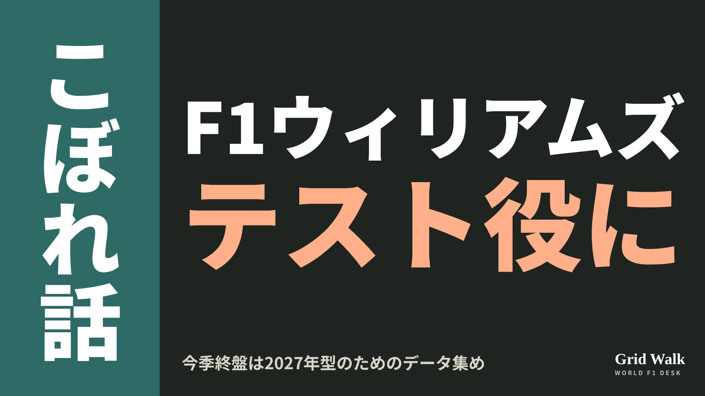<button class="cp dl" data-img="img/x_williams-sainz-albon-test-drivers-20261116.png" data-name="x_williams-sainz-albon-test-drivers-20261116.png">ダウンロード</button></li>
<li class="st"><div class="hd"><b>① noteをシェアするときの文</b></div><div class="bx" id="p1x0">コンストラクターズ9位のウィリアムズは、今季終盤の週末の一部を2027年の車のための試験に使っています。サインツは「15位か17位かは気にしない」。ただしラスベガスは別。noteにまとめました #F1jp #ウィリアムズ</div><button class="cp" data-plain="p1x0">コピー</button></li>
<li class="st"><div class="hd"><b>② ①への返信</b></div><div class="bx" id="p1x1">ほかの海外記事も読みたい方は、F1 Grid Walkへ。
https://f1gridwalk.github.io/lens/williams-sainz-albon-test-drivers-20261116/?utm_source=x&amp;utm_campaign=williams-sainz-albon-test-drivers-20261116</div><button class="cp" data-plain="p1x1">コピー</button></li>
<li class="st"><div class="hd"><b>③ ②への返信</b></div><div class="bx" id="p1x2">毎日の海外F1ニュースは、日本語でこちらにまとめています。
https://f1gridwalk.github.io/</div><button class="cp" data-plain="p1x2">コピー</button></li>
</ol></section><section class="part" id="p2"><h2><span class="tag">OFF GRID</span>リバティ前CEO、2028年も上場かと問われ「F1はもういない」</h2><p class="sub">サイトに公開：12:21</p><ol class="steps">
<li class="st im"><div class="hd"><span class="no">1</span><b>見出し画像</b><em>画像</em></div>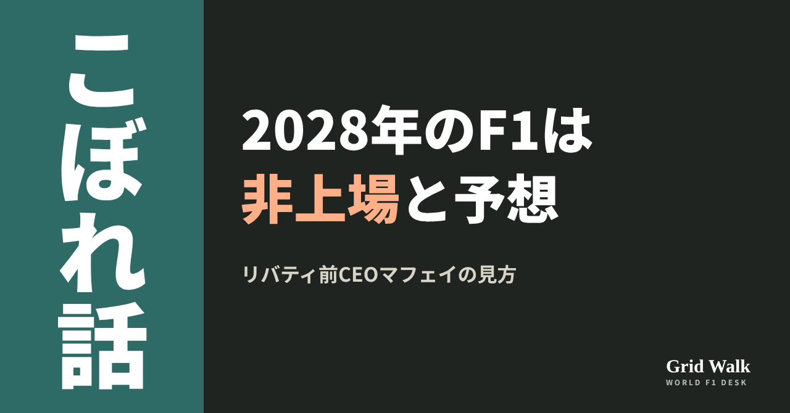<button class="cp dl" data-img="img/maffei-f1-sale-20261116.png" data-name="maffei-f1-sale-20261116_見出し画像.png">ダウンロード</button></li>
<li class="st"><div class="hd"><span class="no">2</span><b>タイトル</b></div><div class="bx" id="p2t">リバティ前CEO、2028年も上場かと問われ「F1はもういない」</div><button class="cp" data-plain="p2t">タイトルをコピー</button></li>
<li class="st"><div class="hd"><span class="no">3</span><b>本文</b></div><div class="bx tall" id="p2r"><p>2028年にも、F1はまだ株式市場にいるか。そう聞かれたリバティ・メディアの前CEO、グレッグ・マフェイは「F1はもういない、と言っておこう」と答えました。F1は数年のうちに、また非上場の持ち主のものになるという予想です。イギリスのPlanetF1が11月15日に伝えています。</p><p>発言を伝えた各紙の記事へのリンクはサイトで → <a href="https://f1gridwalk.github.io/lens/maffei-f1-sale-20261116/?utm_source=note&amp;utm_campaign=maffei-f1-sale-20261116">https://f1gridwalk.github.io/lens/maffei-f1-sale-20261116/?utm_source=note&amp;utm_campaign=maffei-f1-sale-20261116</a></p><p>話したのは、アメリカのスポーツビジネス媒体スポーティコ（Sportico）の投資会議、Invest New York 2026の場です。リバティ・メディアはF1の商業面を持つ会社で、マフェイは2024年の終わりまで、その社長兼CEOでした（シティAM／イギリス）。</p><h2>「たぶん売られる」の理由</h2><p>イギリスの経済紙シティAMは11月11日、マフェイがこう続けたと伝えています。</p><blockquote><p>「もし、どこかにお金を賭けなければならないなら、そこに賭ける」「決めるのは株式市場と、受託者としての義務を負う取締役会だ。だから、どちらかといえば、たぶん売られると言っておく」（マフェイ、シティAM／イギリス）</p></blockquote><p>理由として挙げたのは、F1のもうけの伸び方です。</p><blockquote><p>「簡単に稼げるお金は、もう稼がれた」「EBITDA（利払い・税金・償却の前の利益）は、8〜9年で3倍になった。次の8〜9年で、また3倍になることはない」（マフェイ、PlanetF1／イギリス）</p></blockquote><h2>約46億ドルから、見積もり約300億ドルへ</h2><p>PlanetF1によると、リバティは2017年、投資会社のCVCキャピタルに約46億ドルを払ってF1を手に入れました。今のF1の価値は、約300億ドルと見積もられているといいます。</p><p>ただ、数字は記事によって取り方が違います。アメリカのMotorBiscuitは、2017年に買ったときのF1の企業価値を80億ドルとしています。また同じ記事は、F1の権利を持つのはFIAで、リバティは商業面を今世紀の終わりまで借りている形だとし、売るにはFIAの承認が要ると書いています。</p><h2>きっかけは創業者マローンの株</h2><p>PlanetF1は、この話が出たのは、リバティの創業者ジョン・マローンが議決権の大半を手放した直後だと書いています。イギリスのThe Raceによると、マローンは2026年に会長を退き、リバティは11月初め、マローンの議決権の多い株を買い取り、議決権の少ない株と取り替えたと発表しました。これで、マローンの議決権は約48%から3%になったといいます。その前に、マローンには第三者から頼んでいない申し出がいくつも来ていたそうです。</p><p>The Raceによると、デレク・チャンCEOは第3四半期の決算説明会で、この買い取りについてこう述べました。</p><blockquote><p>「自分たちの行く末を、これから実質的に自分たちで決められるようになる」（チャン、The Race／イギリス）</p></blockquote><p>チャンCEOは、今の事業を伸ばすための投資がおそらく一番の優先だとも話しています。The Raceは、リバティが2026年にF1の売却を考えている兆しはない、と書いています。マフェイの発言へのリバティやF1の答えは、確かめた記事には出ていません（シティAMはF1にコメントを求めたと書いています）。</p><p>編集部としては、これは前のトップの予想で、今の経営陣の方針ではない、という点が大事だと見ています。マフェイ自身、決めるのは株式市場と取締役会だと話しています。それでも、長くF1の持ち主の側にいた人がはっきり予想を口にしたことで、持ち主の話はしばらく続きそうです。</p><p><strong>2028年、F1の持ち主は今と同じだと思いますか？</strong></p><p>━━━━━━━━━━</p><p><strong>F1 Grid Walk では、世界のF1ニュースを毎日日本語でまとめています。</strong></p><p>海外の記事の要約を、毎日載せています。</p><p><a href="https://f1gridwalk.github.io/">https://f1gridwalk.github.io/</a></p><p>ほかの海外記事も読みたい方は、F1 Grid Walkへ。</p><p><a href="https://f1gridwalk.github.io/lens/maffei-f1-sale-20261116/">https://f1gridwalk.github.io/lens/maffei-f1-sale-20261116/</a></p><p>━━━━━━━━━━</p><p><a href="https://www.planetf1.com/news/f1-tipped-for-imminent-sale-by-former-liberty-media-boss">出典：PlanetF1（イギリス）</a></p><p><a href="https://www.cityam.com/formula-1-tipped-to-go-private-by-2029-in-deal-that-could-be-worth-22bn/">出典：シティAM（イギリス）</a></p><p><a href="https://www.motorbiscuit.com/ex-liberty-boss-says-28-billion-f1-will-probably-be-sold-within-2-years/">出典：MotorBiscuit（アメリカ）</a></p><p><a href="https://www.the-race.com/business/liberty-media-founder-john-malone-sells-voting-power-f1-parent-company/">出典：The Race（イギリス）</a></p></div><button class="cp" data-rich="p2r">本文をコピー</button></li>
<li class="st"><div class="hd"><span class="no">4</span><b>ハッシュタグ</b></div><div class="bx" id="p2h">#F1 #F1jp #リバティメディア #マフェイ #F1ビジネス #モータースポーツ #F1こぼれ話 #OFFGRID</div><button class="cp" data-plain="p2h">タグをコピー</button></li>
</ol><h3 class="xh">X</h3><ol class="steps">
<li class="st im"><div class="hd"><b>X用の画像</b><em>画像</em></div>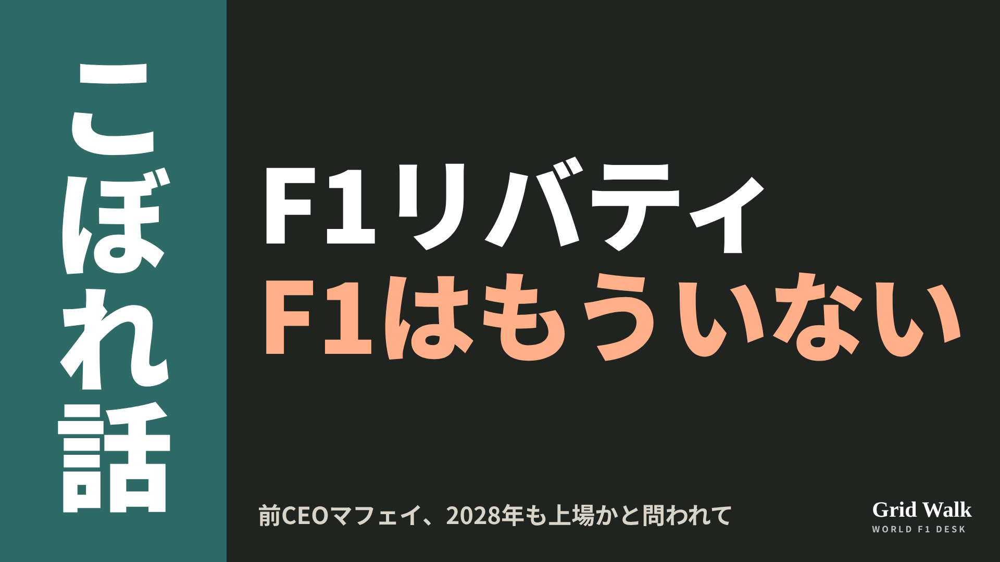<button class="cp dl" data-img="img/x_maffei-f1-sale-20261116.png" data-name="x_maffei-f1-sale-20261116.png">ダウンロード</button></li>
<li class="st"><div class="hd"><b>① noteをシェアするときの文</b></div><div class="bx" id="p2x0">リバティ・メディアの前CEOマフェイが、2028年もF1は上場しているかと聞かれ「F1はもういない」と予想。今のリバティは成長への投資を優先すると話しています。noteにまとめました #F1jp #リバティメディア</div><button class="cp" data-plain="p2x0">コピー</button></li>
<li class="st"><div class="hd"><b>② ①への返信</b></div><div class="bx" id="p2x1">ほかの海外記事も読みたい方は、F1 Grid Walkへ。
https://f1gridwalk.github.io/lens/maffei-f1-sale-20261116/?utm_source=x&amp;utm_campaign=maffei-f1-sale-20261116</div><button class="cp" data-plain="p2x1">コピー</button></li>
<li class="st"><div class="hd"><b>③ ②への返信</b></div><div class="bx" id="p2x2">毎日の海外F1ニュースは、日本語でこちらにまとめています。
https://f1gridwalk.github.io/</div><button class="cp" data-plain="p2x2">コピー</button></li>
</ol></section><section class="part" id="p3"><h2><span class="tag">OFF GRID</span>レッドブル、トップとの差は1.3〜1.4秒から0.3秒に</h2><p class="sub">サイトに公開：12:22</p><ol class="steps">
<li class="st im"><div class="hd"><span class="no">1</span><b>見出し画像</b><em>画像</em></div>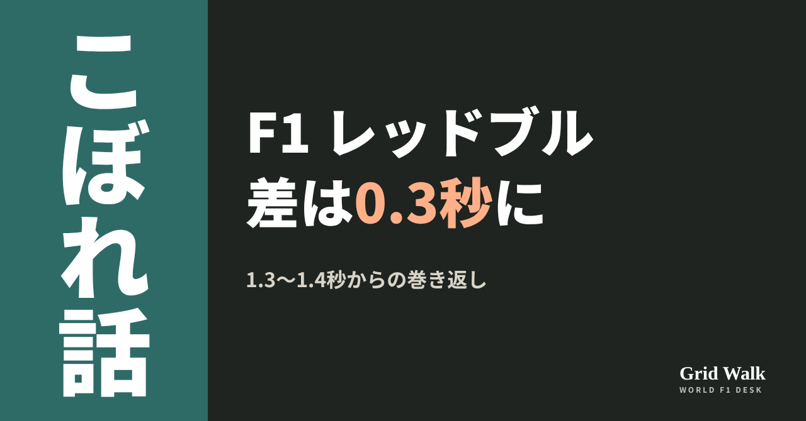<button class="cp dl" data-img="img/mekies-red-bull-gap-20261116.png" data-name="mekies-red-bull-gap-20261116_見出し画像.png">ダウンロード</button></li>
<li class="st"><div class="hd"><span class="no">2</span><b>タイトル</b></div><div class="bx" id="p3t">レッドブル、トップとの差は1.3〜1.4秒から0.3秒に</div><button class="cp" data-plain="p3t">タイトルをコピー</button></li>
<li class="st"><div class="hd"><span class="no">3</span><b>本文</b></div><div class="bx tall" id="p3r"><p>「1.3、1.4秒から10分の3秒まで来ました」。レッドブルのローレン・メキース代表が、今季のトップとの差の縮まり方をこう振り返りました。イギリスのPlanetF1が11月15日に伝えています。開幕のとき、メルセデスには「1秒以上」のリードがあったといいます。</p><p>元の記事へのリンクと、ホーナー元代表とのやりとりのコラムへの案内はサイトで → <a href="https://f1gridwalk.github.io/lens/mekies-red-bull-gap-20261116/?utm_source=note&amp;utm_campaign=mekies-red-bull-gap-20261116">https://f1gridwalk.github.io/lens/mekies-red-bull-gap-20261116/?utm_source=note&amp;utm_campaign=mekies-red-bull-gap-20261116</a></p><p>PlanetF1によると、メキース代表が話したのはブラジルで、マックス・フェルスタッペンが2位、アイザック・ハジャーが3位に入ったレースのときです（記事の要約 https://f1gridwalk.github.io/news/en-planetf1-mekies-redbull-turnaround/ ）。</p><h2>開幕4戦、表彰台なしから</h2><p>PlanetF1によると、新しい規則の1年目、レッドブルは重すぎる車と信頼性のトラブルに苦しみ、開幕4戦は一度も3位以内に入れませんでした。F1公式の結果では、今季の初勝利は第16戦バーレーンGP（マレーシア開催）のフェルスタッペン。そのあと第17戦シンガポールGP、第19戦メキシコシティGPでも勝っています。</p><blockquote><p>「1.3秒か1.4秒遅れていたときに、すべてを出し切った、本当に信じられないほどの努力でした」「すべてを出し切って、その差を詰めるために、さらにもうひと頑張りしようとしたんです」（メキース代表、PlanetF1／イギリス）</p></blockquote><blockquote><p>「チームのその努力を、とても誇りに思います」（同）</p></blockquote><p>何が効いたのかは、ひとつに絞れないといいます。</p><blockquote><p>「シャシーの側も、PUの側も」「そうしたくても、1つ、2つ、3つの要素を挙げることはできません」（同）</p></blockquote><h2>「誰も待ってはくれない」</h2><blockquote><p>「シーズンのある時点で、私たちは1.3、1.4秒から10分の3秒まで来ました。そして、こう感じたんです。『いいか、誰も私たちを待ってはくれない』と」「最後の10分の3秒を手に入れるのは、かなり難しいでしょう」（同）</p></blockquote><p>メルセデスについては、まず相手をたたえました。</p><blockquote><p>「彼らは見事な仕事をしたと思います」「シーズンの初めに、彼らがどれほど圧倒的だったかは、みんな覚えています。もちろん、おっしゃるとおり、彼らがほかの多くより早く切り替えていたことは分かっていました」（同）</p></blockquote><blockquote><p>「でも、ほかより早く切り替えることと、それをラップタイムに変えることは別の話で、彼らはそれをやってのけた」「彼らは、私たちに1秒以上の差をつけてシーズンを始めました。だから、とてもいい仕事をしたのは明らかです」（同）</p></blockquote><blockquote><p>「でも、その差を半シーズンで詰めたことも、同じくらい見事だと思います」（同）</p></blockquote><h2>王座はメルセデス、残りは3戦</h2><p>PlanetF1によると、今季はアンドレア・キミ・アントネッリが王座を決め、メルセデスがドライバーとコンストラクターズの二冠を取りました。F1公式の順位では、フェルスタッペンは279点で2位、ハジャーは122点で8位です。F1公式の結果では、フェルスタッペンは夏休み明けのオランダGPでリタイアしたあと、第13戦イタリアGPから第20戦サンパウロGPまで8戦続けて表彰台に上がっています（うち優勝3回）。チームの雰囲気をめぐるホーナー元代表とのやりとりは、コラム https://f1gridwalk.github.io/lens/mekies-horner-mojo-20261112/ で紹介しました。</p><p>次は第21戦ラスベガスGP。全23戦の今季は、残り3戦です（F1公式）。編集部としては、1秒以上の差を半シーズンで詰めた速さより、本人が難しいと認めた最後の10分の3秒のほうが、残り3戦と来年の見どころになると見ています。</p><p><strong>メキース代表が難しいと言う「最後の10分の3秒」。レッドブルは来年の開幕までに詰められると思いますか？</strong></p><p>━━━━━━━━━━</p><p><strong>F1 Grid Walk では、世界のF1ニュースを毎日日本語でまとめています。</strong></p><p>海外の記事の要約を、毎日載せています。</p><p><a href="https://f1gridwalk.github.io/">https://f1gridwalk.github.io/</a></p><p>ほかの海外記事も読みたい方は、F1 Grid Walkへ。</p><p><a href="https://f1gridwalk.github.io/lens/mekies-red-bull-gap-20261116/">https://f1gridwalk.github.io/lens/mekies-red-bull-gap-20261116/</a></p><p>━━━━━━━━━━</p><p><a href="https://www.planetf1.com/news/red-bull-f1-2026-turnaround-revealed">出典：PlanetF1（イギリス）</a></p><p><a href="https://www.formula1.com/en/results/2026/races">出典：F1公式サイト（イギリス）</a></p><p><a href="https://www.formula1.com/en/results/2026/drivers">出典：F1公式サイト（イギリス）</a></p></div><button class="cp" data-rich="p3r">本文をコピー</button></li>
<li class="st"><div class="hd"><span class="no">4</span><b>ハッシュタグ</b></div><div class="bx" id="p3h">#F1 #F1jp #レッドブル #メキース #フェルスタッペン #ハジャー #メルセデス #ラスベガスGP #F1こぼれ話 #OFFGRID</div><button class="cp" data-plain="p3h">タグをコピー</button></li>
</ol><h3 class="xh">X</h3><ol class="steps">
<li class="st im"><div class="hd"><b>X用の画像</b><em>画像</em></div>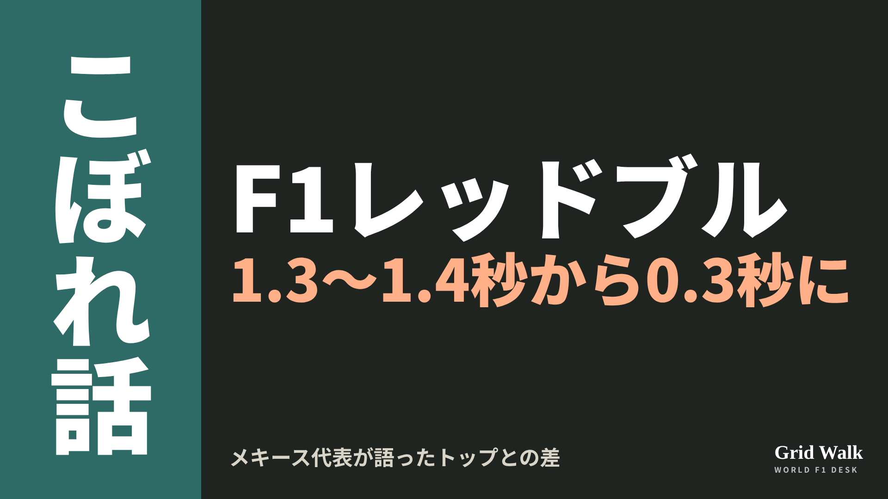<button class="cp dl" data-img="img/x_mekies-red-bull-gap-20261116.png" data-name="x_mekies-red-bull-gap-20261116.png">ダウンロード</button></li>
<li class="st"><div class="hd"><b>① noteをシェアするときの文</b></div><div class="bx" id="p3x0">レッドブルのメキース代表が、今季前半に1.3〜1.4秒あったトップとの差を0.3秒まで詰めたと振り返りました。フェルスタッペンはイタリアから8戦続けて表彰台。noteにまとめました #F1jp #レッドブル</div><button class="cp" data-plain="p3x0">コピー</button></li>
<li class="st"><div class="hd"><b>② ①への返信</b></div><div class="bx" id="p3x1">ほかの海外記事も読みたい方は、F1 Grid Walkへ。
https://f1gridwalk.github.io/lens/mekies-red-bull-gap-20261116/?utm_source=x&amp;utm_campaign=mekies-red-bull-gap-20261116</div><button class="cp" data-plain="p3x1">コピー</button></li>
<li class="st"><div class="hd"><b>③ ②への返信</b></div><div class="bx" id="p3x2">毎日の海外F1ニュースは、日本語でこちらにまとめています。
https://f1gridwalk.github.io/</div><button class="cp" data-plain="p3x2">コピー</button></li>
</ol></section><section class="part" id="p4"><h2><span class="tag">OFF GRID</span>アリソン「少しでは済まない」　2027年F1はダウンフォース減と予想</h2><p class="sub">サイトに公開：12:23</p><ol class="steps">
<li class="st im"><div class="hd"><span class="no">1</span><b>見出し画像</b><em>画像</em></div>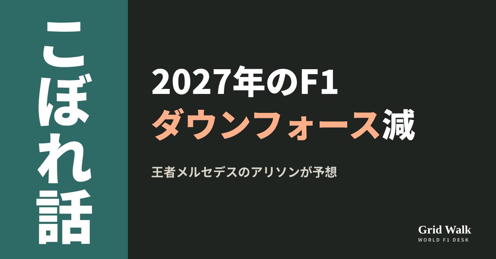<button class="cp dl" data-img="img/allison-2027-downforce-20261116.png" data-name="allison-2027-downforce-20261116_見出し画像.png">ダウンロード</button></li>
<li class="st"><div class="hd"><span class="no">2</span><b>タイトル</b></div><div class="bx" id="p4t">アリソン「少しでは済まない」　2027年F1はダウンフォース減と予想</div><button class="cp" data-plain="p4t">タイトルをコピー</button></li>
<li class="st"><div class="hd"><span class="no">3</span><b>本文</b></div><div class="bx tall" id="p4r"><p>今季、ドライバーとコンストラクターズの二冠を決めたメルセデス。テクニカルディレクターのジェームズ・アリソンが、来季2027年の車について、はっきりした予想を口にしました。ダウンフォース（車を路面に押しつける空気の力）は、少しでは済まないほど減る、というものです。話したのは、チームのポッドキャスト Nu Silver Arrows Radio Show の第12回 The Making of World Champions。聞き手は元F1ドライバーのアンソニー・デビッドソンです。</p><p>アリソンが話した番組の回と、元の記事やF1公式の発表へのリンクはサイトで → <a href="https://f1gridwalk.github.io/lens/allison-2027-downforce-20261116/?utm_source=note&amp;utm_campaign=allison-2027-downforce-20261116">https://f1gridwalk.github.io/lens/allison-2027-downforce-20261116/?utm_source=note&amp;utm_campaign=allison-2027-downforce-20261116</a></p><h2>今季の初めの水準まで戻す</h2><blockquote><p>「僕に分かっているのは、新しい規則で車がダウンフォースを少し失うということだけ。少しでは済まない」（アリソン、Motorsport.com／イギリス）</p></blockquote><blockquote><p>「彼らは、ダウンフォースを2026年の時代の始まりのところまで引き戻そうと、かなり力を入れてきた。チームがそれをおとなしく受け入れるのか、僕らが全部取り戻すのか、見ものだね」（アリソン、RacingNews365／イギリス。「彼ら」はFIAのことだとRacingNews365オランダ語版は伝えています）</p></blockquote><p>ただ、どれだけ減るのかの数字は、F1公式の発表には出ていません。F1公式サイトによると、2027年の空力と車体の部品の変更は、6月2日のF1コミッションで小さな変更として仮に合意され、6月23日の世界モータースポーツ評議会（WMSC）で2027年の技術規則の第1版が承認されました。</p><p>中身について、英The Race（7月17日）は、リアウイングを約20mm浅くすること、エキゾーストウイングの禁止、床下の板（プランク）の前の部分を900mmから600mmに短くすることなどを挙げています。FIAがダウンフォースを抑えたいのは、タイヤにかかる力を減らすためで、コーナーが速くなるほど直線でエネルギーが足りなくなり、レースの中身が悪くなるからだ、とThe Raceは書いています。</p><h2>パワーユニットも、ちょっとした手直しではない</h2><p>F1公式によると、2027年は内燃エンジン（ICE）の最大出力が400kWから420kWに上がり、電気モーター（MGU-K）は350kWから300kWに下がります（オーバーテイクモードでは350kWのまま）。燃料の流れは2026年より5%増え、ICEとMGU-Kの出力の比は53対47から58対42に。2028年は60対40になります（くわしくは https://f1gridwalk.github.io/deep/rules/regulations-2027/ ）。</p><blockquote><p>番組では、デビッドソンが開幕のころのメルセデスの差を0.85秒ほどと見積もり、ライバルに差を詰められたのではと聞きました。アリソンの答えはこうです。</p></blockquote><p>番組では、デビッドソンが開幕のころのメルセデスの差を0.85秒ほどと見積もり、ほかに追いつかせたのかと聞きました。アリソンの答えはこうです。</p><blockquote><p>「追いつかせる、なんてことはないと思う。どんな筋書きをつけてもいいけれど、僕らはシーズンをものすごく強く始めた。それにはいくつか理由がある」「多くのチームより準備ができていたと思う。年の初めのエネルギーの管理も、うまくつかめていた」（アリソン、RacingNews365／オランダ）</p></blockquote><p>編集部としては、2026年に準備で先に出たと話すメルセデスにとって、2027年の変更はその準備がもう一度試される場になりそうだと見ています（元の記事の要約 https://f1gridwalk.github.io/news/nl-racingnews365-mercedes-downforce-2027/ ）。</p><p><strong>来季、チームは減ったダウンフォースを取り戻してしまうと思いますか？ それとも、FIAのねらいどおり今季の初めに近い車で走ると思いますか？</strong></p><p>━━━━━━━━━━</p><p><strong>F1 Grid Walk では、世界のF1ニュースを毎日日本語でまとめています。</strong></p><p>海外の記事の要約を、毎日載せています。</p><p><a href="https://f1gridwalk.github.io/">https://f1gridwalk.github.io/</a></p><p>ほかの海外記事も読みたい方は、F1 Grid Walkへ。</p><p><a href="https://f1gridwalk.github.io/lens/allison-2027-downforce-20261116/">https://f1gridwalk.github.io/lens/allison-2027-downforce-20261116/</a></p><p>━━━━━━━━━━</p><p><a href="https://racingnews365.nl/mercedes-voorspelt-fors-downforceverlies-voor-f1-teams-in-2027">出典：RacingNews365（オランダ）</a></p><p><a href="https://racingnews365.com/mercedes-predict-significant-loss-for-start-of-new-f1-season">出典：RacingNews365（イギリス）</a></p><p><a href="https://sports.yahoo.com/articles/mercedes-technical-director-warns-f1-121436411.html">出典：Motorsport.com（Yahoo Sports転載）（イギリス）</a></p><p><a href="https://www.the-race.com/formula-1/significant-aero-rule-changes-for-f1-2027-explained/">出典：The Race（イギリス）</a></p><p><a href="https://www.formula1.com/en/latest/article/agreement-reached-on-proposed-f1-regulatory-changes-for-2027-and-2028.dlv3dZcWoXsXGbhw2WWyb.dlv3dZcWoXsXGbhw2WWyb">出典：Formula1.com（イギリス）</a></p><p><a href="https://www.formula1.com/en/latest/article/various-2027-regulation-tweaks-agreed-during-latest-f1-commission-meeting.4eu25WswZmTMpSfh13eE9A">出典：Formula1.com（イギリス）</a></p><p><a href="https://www.formula1.com/en/latest/article/fias-wmsc-ratifies-f1-regulatory-changes-for-2027-and-2028.ACyRcPvBKo8LRiOleCSJU.ACyRcPvBKo8LRiOleCSJU">出典：Formula1.com（イギリス）</a></p><p><a href="https://podcasts.apple.com/podcast/id1895283998">出典：Apple Podcasts（イギリス）</a></p></div><button class="cp" data-rich="p4r">本文をコピー</button></li>
<li class="st"><div class="hd"><span class="no">4</span><b>ハッシュタグ</b></div><div class="bx" id="p4h">#F1 #F1jp #メルセデス #ジェームズアリソン #2027年規則 #ダウンフォース #パワーユニット #F1こぼれ話 #OFFGRID</div><button class="cp" data-plain="p4h">タグをコピー</button></li>
</ol><h3 class="xh">X</h3><ol class="steps">
<li class="st im"><div class="hd"><b>X用の画像</b><em>画像</em></div>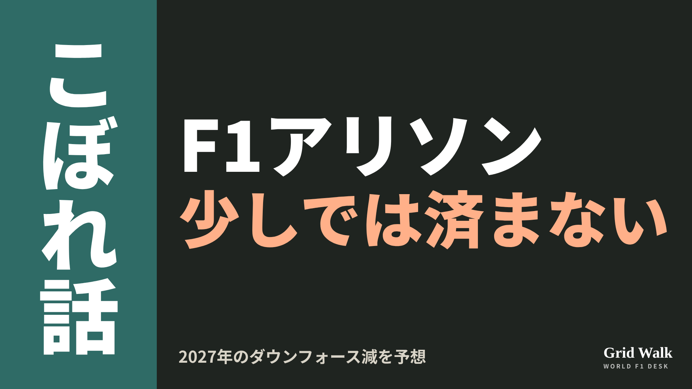<button class="cp dl" data-img="img/x_allison-2027-downforce-20261116.png" data-name="x_allison-2027-downforce-20261116.png">ダウンロード</button></li>
<li class="st"><div class="hd"><b>① noteをシェアするときの文</b></div><div class="bx" id="p4x0">メルセデスのアリソンが、来季の車はダウンフォースを「少しでは済まない」ほど失うと予想。2027年はエンジンと電気の比が58対42に変わります。noteにまとめました #F1jp #メルセデス</div><button class="cp" data-plain="p4x0">コピー</button></li>
<li class="st"><div class="hd"><b>② ①への返信</b></div><div class="bx" id="p4x1">ほかの海外記事も読みたい方は、F1 Grid Walkへ。
https://f1gridwalk.github.io/lens/allison-2027-downforce-20261116/?utm_source=x&amp;utm_campaign=allison-2027-downforce-20261116</div><button class="cp" data-plain="p4x1">コピー</button></li>
<li class="st"><div class="hd"><b>③ ②への返信</b></div><div class="bx" id="p4x2">毎日の海外F1ニュースは、日本語でこちらにまとめています。
https://f1gridwalk.github.io/</div><button class="cp" data-plain="p4x2">コピー</button></li>
</ol></section><section class="part" id="p5"><h2><span class="tag">OFF GRID</span>角田と岩佐の来季は未定と蘭GPblog　19歳ツォロフがリザーブに</h2><p class="sub">サイトに公開：12:24</p><ol class="steps">
<li class="st im"><div class="hd"><span class="no">1</span><b>見出し画像</b><em>画像</em></div><button class="cp dl" data-img="img/tsunoda-iwasa-reserve-future-20261115.png" data-name="tsunoda-iwasa-reserve-future-20261115_見出し画像.png">ダウンロード</button></li>
<li class="st"><div class="hd"><span class="no">2</span><b>タイトル</b></div><div class="bx" id="p5t">角田と岩佐の来季は未定と蘭GPblog　19歳ツォロフがリザーブに</div><button class="cp" data-plain="p5t">タイトルをコピー</button></li>
<li class="st"><div class="hd"><span class="no">3</span><b>本文</b></div><div class="bx tall" id="p5r"><p>レッドブルとレーシングブルズの来年のリザーブに、19歳のニコラ・ツォロフが決まりました（F1公式）。では、今年その役を務めている角田裕毅と岩佐歩夢はどうなるのか。オランダのGPblogは現地11月12日、ツォロフの新しい役目は岩佐か角田、あるいは2人ともにとって悪い知らせになるかもしれない、と報じました。ただ同じ記事は、2人の処遇について内部ではまだ結論が出ていない、とも伝えています。</p><p>GPblogの元の記事へのリンクと、ルーキーのFP1の決まりの解説はサイトで → <a href="https://f1gridwalk.github.io/lens/tsunoda-iwasa-reserve-future-20261115/?utm_source=note&amp;utm_campaign=tsunoda-iwasa-reserve-future-20261115">https://f1gridwalk.github.io/lens/tsunoda-iwasa-reserve-future-20261115/?utm_source=note&amp;utm_campaign=tsunoda-iwasa-reserve-future-20261115</a></p><p>今年、角田はレッドブルのテスト兼リザーブで、レーシングブルズのリザーブも兼ねています。岩佐はレーシングブルズの公式リザーブの1人です（F1公式）。</p><h2>ツォロフの来年の役目</h2><p>F1公式によると、ツォロフは2027年、レッドブルとレーシングブルズに共通のリザーブドライバーになります。必要なときはレースに出られるよう待機する役目で、シミュレーターでの開発やFP1、旧型車のテスト（TPC）も受け持ちます。</p><p>レーシングブルズの来年の2席がリアム・ローソンとアービッド・リンドブラッドに決まった発表は、コラム https://f1gridwalk.github.io/lens/racing-bulls-2027-confirmed-20261113/ で書いています。</p><h2>半年前は逆だった</h2><p>おもしろいのは、半年前の形です。GPblogは5月8日、レーシングブルズにはツォロフを走らせる計画がなく、予定しているFP1は岩佐のものだけだと報じていました。待たされていたのは、ツォロフのほうでした。</p><p>その後、岩佐は今年、バルセロナ、オーストリア、イタリア、メキシコシティの4回のFP1を走りました。メキシコではマックス・フェルスタッペンの車です。同じメキシコでは、ツォロフもローソンの代わりに、レーシングブルズで初めてFP1を走りました（F1公式）。</p><p>F1には、決勝に2戦を超えて出ていないドライバーを、車1台につき年2回、金曜の練習で走らせる決まりがあります（DEEP https://f1gridwalk.github.io/deep/rookie-fp1/ ）。GPblogの5月の記事によると、角田は5月の時点で114戦に出ていて、この枠では走れません。ツォロフと岩佐は、どちらもこの枠に入ります。編集部としては、来年この枠をツォロフが多く使うなら、岩佐の金曜の出番がどう変わるかが一つの分かれ目になると見ています。</p><h2>1人が残る余地</h2><p>GPblogは、リザーブを何人も置くのは珍しくないと聞いているとして、少なくとも1人が残る余地はある、と報じました。そのうえで、2人ともレースの席の候補ではない、とも書いています。</p><p>角田について、GPblogは、本人はF1への復帰を望んでいるものの、来年グリッドに並ぶ見込みはないと書きました。以前、新しくリザーブの役を受けることには乗り気でないと話していた、とも伝えています。角田の今季の3戦と、11月25日に控訴審が開かれるモンツァの1点の話は、 https://f1gridwalk.github.io/topics/tsunoda-mentality-always-f1/ と https://f1gridwalk.github.io/topics/tsunoda-call-me-please/ にまとめています。</p><p>岩佐について、GPblogは、2027年もスーパーフォーミュラで席を見つけられるのは間違いない、と書いています。岩佐は2025年、TEAM MUGENでスーパーフォーミュラの王者になりました（Motorsport.com）。今年の王座争いは、コラム https://f1gridwalk.github.io/lens/iwasa-ohta-suzuka-20261027/ で書いています。</p><p>編集部としては、GPblogの記事はどちらかが外れると言い切ったものではなく、2人の来年の答えはまだ先にあると見ています。</p><p><strong>リザーブを3人置くのと、若手1人に絞るのと。あなたは、チームにとってどちらがいいと思いますか？</strong></p><p>━━━━━━━━━━</p><p><strong>F1 Grid Walk では、世界のF1ニュースを毎日日本語でまとめています。</strong></p><p>海外の記事の要約を、毎日載せています。</p><p><a href="https://f1gridwalk.github.io/">https://f1gridwalk.github.io/</a></p><p>ほかの海外記事も読みたい方は、F1 Grid Walkへ。</p><p><a href="https://f1gridwalk.github.io/lens/tsunoda-iwasa-reserve-future-20261115/">https://f1gridwalk.github.io/lens/tsunoda-iwasa-reserve-future-20261115/</a></p><p>━━━━━━━━━━</p><p><a href="https://www.gpblog.com/en/news/tsunodas-future-uncertain-after-tsolov-promotion-at-red-bull">出典：GPblog（オランダ）</a></p><p><a href="https://www.gpblog.com/en/exclusive-news/red-bull-driver-kept-waiting-racing-bulls-chooses-another-driver-for-fp1">出典：GPblog（オランダ）</a></p><p><a href="https://www.formula1.com/en/latest/article/tsolov-to-join-red-bull-and-racing-bulls-as-reserve-driver-for-2027.390fvkyiS2t5fnyVjvxqFq">出典：Formula 1 公式（イギリス）</a></p><p><a href="https://www.formula1.com/en/latest/article/which-rookie-drivers-are-getting-fp1-outings-at-the-mexico-city-grand-prix.7rCPdOEOjnSiAOM8SjUAsB">出典：Formula 1 公式（イギリス）</a></p><p><a href="https://www.formula1.com/en/latest/article/what-the-teams-said-friday-in-mexico-city-2026.6smOV3lTU4s76z0vrnd1RJ">出典：Formula 1 公式（イギリス）</a></p><p><a href="https://www.formula1.com/en/latest/article/who-are-the-reserve-drivers-for-each-f1-team-in-2026.Ce8YvwuVJGLkVNgERX21U">出典：Formula 1 公式（イギリス）</a></p><p><a href="https://www.motorsport.com/super-formula/news/red-bull-f1-reserve-ayumu-iwasa-wins-super-formula-title/10779152/">出典：Motorsport.com（イギリス）</a></p></div><button class="cp" data-rich="p5r">本文をコピー</button></li>
<li class="st"><div class="hd"><span class="no">4</span><b>ハッシュタグ</b></div><div class="bx" id="p5h">#F1 #F1jp #角田裕毅 #岩佐歩夢 #ツォロフ #レッドブル #レーシングブルズ #F1移籍 #F1こぼれ話 #OFFGRID</div><button class="cp" data-plain="p5h">タグをコピー</button></li>
</ol><h3 class="xh">X</h3><ol class="steps">
<li class="st im"><div class="hd"><b>X用の画像</b><em>画像</em></div>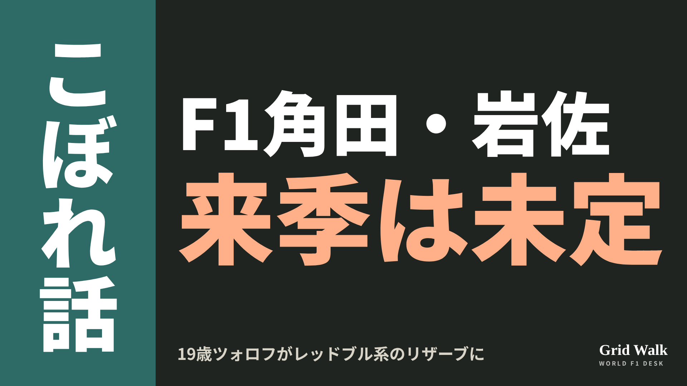<button class="cp dl" data-img="img/x_tsunoda-iwasa-reserve-future-20261115.png" data-name="x_tsunoda-iwasa-reserve-future-20261115.png">ダウンロード</button></li>
<li class="st"><div class="hd"><b>① noteをシェアするときの文</b></div><div class="bx" id="p5x0">レッドブル系の来年のリザーブに19歳のツォロフ。蘭GPblogは、角田と岩佐の処遇は内部でまだ決まっておらず、1人が残る余地はあると報じています。noteにまとめました #F1jp #角田裕毅 #岩佐歩夢</div><button class="cp" data-plain="p5x0">コピー</button></li>
<li class="st"><div class="hd"><b>② ①への返信</b></div><div class="bx" id="p5x1">ほかの海外記事も読みたい方は、F1 Grid Walkへ。
https://f1gridwalk.github.io/lens/tsunoda-iwasa-reserve-future-20261115/?utm_source=x&amp;utm_campaign=tsunoda-iwasa-reserve-future-20261115</div><button class="cp" data-plain="p5x1">コピー</button></li>
<li class="st"><div class="hd"><b>③ ②への返信</b></div><div class="bx" id="p5x2">毎日の海外F1ニュースは、日本語でこちらにまとめています。
https://f1gridwalk.github.io/</div><button class="cp" data-plain="p5x2">コピー</button></li>
</ol></section><section class="part" id="p6"><h2><span class="tag">OFF GRID</span>メルセデス2台の不振、原因はタイヤの温度　ロード副代表が説明</h2><p class="sub">サイトに公開：12:25</p><ol class="steps">
<li class="st im"><div class="hd"><span class="no">1</span><b>見出し画像</b><em>画像</em></div>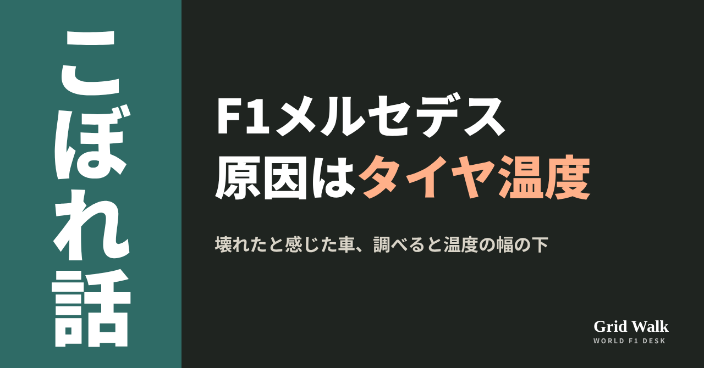<button class="cp dl" data-img="img/mercedes-brazil-tyre-temperature-20261115.png" data-name="mercedes-brazil-tyre-temperature-20261115_見出し画像.png">ダウンロード</button></li>
<li class="st"><div class="hd"><span class="no">2</span><b>タイトル</b></div><div class="bx" id="p6t">メルセデス2台の不振、原因はタイヤの温度　ロード副代表が説明</div><button class="cp" data-plain="p6t">タイトルをコピー</button></li>
<li class="st"><div class="hd"><span class="no">3</span><b>本文</b></div><div class="bx tall" id="p6r"><p>サンパウロGPで、メルセデスの2台は、壊れたのではないかと思うほどの車の挙動に苦しみました。その原因を、チームはタイヤの温度に見つけたようです。ブラッドリー・ロード副代表がチームのSNSで公開したレースの振り返りで説明し、英PlanetF1とmotorsport.comスペイン語版が11月11日に伝えました。</p><p>メルセデスの振り返りを伝えた元の記事と、温度の幅やフラットスポットを説明したルールブックへのリンクはサイトで → <a href="https://f1gridwalk.github.io/lens/mercedes-brazil-tyre-temperature-20261115/?utm_source=note&amp;utm_campaign=mercedes-brazil-tyre-temperature-20261115">https://f1gridwalk.github.io/lens/mercedes-brazil-tyre-temperature-20261115/?utm_source=note&amp;utm_campaign=mercedes-brazil-tyre-temperature-20261115</a></p><h2>浮き沈みの激しい日曜日</h2><p>ロード副代表は、まずレースそのものをこう振り返っています。</p><blockquote><p>「本当に浮き沈みの激しいレースだった」「フォーメーションラップでスピンしてバリアにぶつかりかけたり、ピットレーンでもう1台がスピンしたり、コース上でもいくつも出来事があったりして、それでも4位と5位で帰ってくる。そんなことはめったにない」（ロード、PlanetF1／イギリス）</p></blockquote><p>結果はラッセル4位、アントネッリ5位（F1公式）。先頭を走っていたアンドレア・キミ・アントネッリは、20周目に1コーナーでスピンし、ランド・ノリス（マクラーレン）に前に出られました（motorsport.comスペイン語版）。ジョージ・ラッセルも、ピットを出るところでスピンしています。</p><p>あの日曜日の流れは、STORY https://f1gridwalk.github.io/topics/antonelli-something-is-weird/ でまとめています。</p><h2>いちばん速い時間帯もあった</h2><p>悪いことばかりではありませんでした。</p><blockquote><p>「ブラジルのレースには、実際にコース上でいちばん速い車だった時間帯があった。スタートの最初のインター、そしてドライのソフトのスティントの大部分だ」「まずインターの状況でのキミ、そして特にソフトの時間帯のジョージだ」（ロード、PlanetF1／イギリス）</p></blockquote><blockquote><p>「キミはスピンして、4本のタイヤすべてにフラットスポットを作っていたので、ペースはいくらか限られていた」（同）</p></blockquote><p>フラットスポットは、ロックしたタイヤの一部だけがすり減って平らになることです（ルールブック https://f1gridwalk.github.io/deep/rules/flat-spot/ ）。</p><h2>ソフトに替えたら、温度の幅の下へ</h2><p>一方で、ソフトに替えたところで苦しんだとも話しています。</p><blockquote><p>「でも、ドライのソフトタイヤに替えたところで本当に苦しんだ。とても、とても運転しにくく、オーバーステアが強く、特にソフトのスティントではタイヤの温度がとても低い車だった」「そのせいで、2人のドライバーも、そして実はほかのドライバーたちも、車のどこかが壊れていると本気で思っていた」（ロード、PlanetF1／イギリス）</p></blockquote><p>ところが、調べてみると答えは別のところにありました。</p><blockquote><p>「でも調べてみると、タイヤの温度の幅のわずかに下にいたようだった」「湿った路面で、ときどきその幅に入っては、また外れる。それが、とても奇妙でふだんと違う車の挙動を生んでいた」（ロード、PlanetF1／イギリス）</p></blockquote><p>タイヤには、いちばんよくグリップする温度の幅があります（ルールブック https://f1gridwalk.github.io/deep/rules/operating-window/ ）。motorsport.comスペイン語版も、涼しいなかでタイヤがこの幅に届きにくく、車の挙動は機械の故障によるものではなかった、というチームの説明として伝えています。</p><p>レース直後、トト・ウォルフ代表はタイヤの空気圧かセットアップを疑っていました（コラム https://f1gridwalk.github.io/lens/mercedes-strange-spins-20261109/ ）。同じレースのレッドブルについての分析は、コラム https://f1gridwalk.github.io/lens/red-bull-tyre-window-phenomenon-20261113/ で紹介しています。編集部としては、レース後の数日で、メルセデスの説明が空気圧の疑いからタイヤの温度へと一歩進んだと見ています。ただ、ロード副代表はソフトの時間帯について、いちばん速かったとも、苦しんだとも語っていて、なぜ温度の幅に届かなかったのかも、この振り返りでは語られていません。</p><p><strong>壊れたと感じるほどの挙動が、タイヤの温度だけで起きる。あなたは、この説明に納得しますか？</strong></p><p>━━━━━━━━━━</p><p><strong>F1 Grid Walk では、世界のF1ニュースを毎日日本語でまとめています。</strong></p><p>海外の記事の要約を、毎日載せています。</p><p><a href="https://f1gridwalk.github.io/">https://f1gridwalk.github.io/</a></p><p>ほかの海外記事も読みたい方は、F1 Grid Walkへ。</p><p><a href="https://f1gridwalk.github.io/lens/mercedes-brazil-tyre-temperature-20261115/">https://f1gridwalk.github.io/lens/mercedes-brazil-tyre-temperature-20261115/</a></p><p>━━━━━━━━━━</p><p><a href="https://www.planetf1.com/news/mercedes-brazilian-grand-prix-2026-investigation">出典：PlanetF1（イギリス）</a></p><p><a href="https://es.motorsport.com/f1/news/mercedes-explica-problema-antonelli-brasil/10873893/">出典：motorsport.com スペイン語版（スペイン）</a></p><p><a href="https://www.formula1.com/en/latest/article/what-the-teams-said-race-day-at-the-2026-sao-paulo-grand-prix.6WRrgNQ7FDoFnwzxR9Vjw7">出典：F1公式サイト（イギリス）</a></p></div><button class="cp" data-rich="p6r">本文をコピー</button></li>
<li class="st"><div class="hd"><span class="no">4</span><b>ハッシュタグ</b></div><div class="bx" id="p6h">#F1 #F1jp #メルセデス #アントネッリ #ラッセル #サンパウロGP #タイヤ #F1技術 #F1こぼれ話 #OFFGRID</div><button class="cp" data-plain="p6h">タグをコピー</button></li>
</ol><h3 class="xh">X</h3><ol class="steps">
<li class="st im"><div class="hd"><b>X用の画像</b><em>画像</em></div>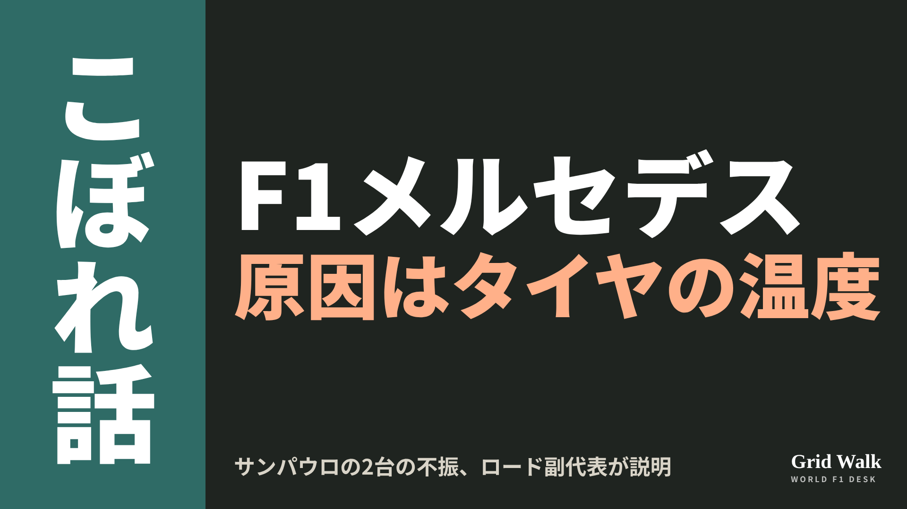<button class="cp dl" data-img="img/x_mercedes-brazil-tyre-temperature-20261115.png" data-name="x_mercedes-brazil-tyre-temperature-20261115.png">ダウンロード</button></li>
<li class="st"><div class="hd"><b>① noteをシェアするときの文</b></div><div class="bx" id="p6x0">サンパウロGPで苦しんだメルセデスの2台。ロード副代表は、タイヤが温度の幅のわずかに下にいたと説明しました。noteにまとめました #F1jp #メルセデス</div><button class="cp" data-plain="p6x0">コピー</button></li>
<li class="st"><div class="hd"><b>② ①への返信</b></div><div class="bx" id="p6x1">ほかの海外記事も読みたい方は、F1 Grid Walkへ。
https://f1gridwalk.github.io/lens/mercedes-brazil-tyre-temperature-20261115/?utm_source=x&amp;utm_campaign=mercedes-brazil-tyre-temperature-20261115</div><button class="cp" data-plain="p6x1">コピー</button></li>
<li class="st"><div class="hd"><b>③ ②への返信</b></div><div class="bx" id="p6x2">毎日の海外F1ニュースは、日本語でこちらにまとめています。
https://f1gridwalk.github.io/</div><button class="cp" data-plain="p6x2">コピー</button></li>
</ol></section><section class="part" id="p7"><h2><span class="tag">OFF GRID</span>ピアストリ、オフは「少し考え直す」　今年の苦戦は去年と「無関係」</h2><p class="sub">サイトに公開：12:26</p><ol class="steps">
<li class="st im"><div class="hd"><span class="no">1</span><b>見出し画像</b><em>画像</em></div>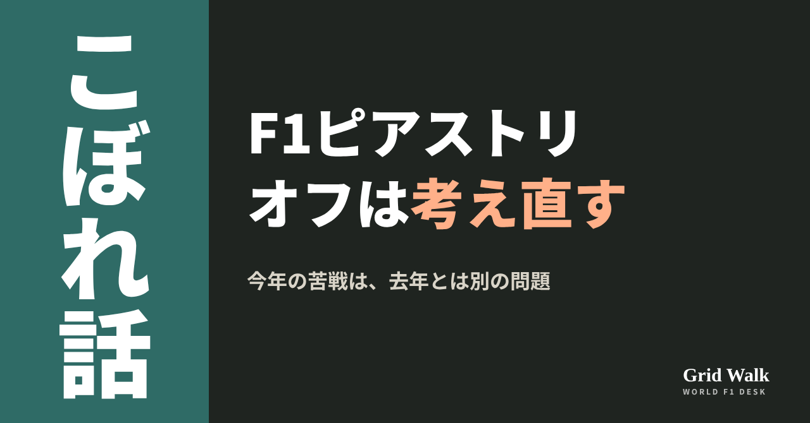<button class="cp dl" data-img="img/piastri-reset-rethink-20261115.png" data-name="piastri-reset-rethink-20261115_見出し画像.png">ダウンロード</button></li>
<li class="st"><div class="hd"><span class="no">2</span><b>タイトル</b></div><div class="bx" id="p7t">ピアストリ、オフは「少し考え直す」　今年の苦戦は去年と「無関係」</div><button class="cp" data-plain="p7t">タイトルをコピー</button></li>
<li class="st"><div class="hd"><span class="no">3</span><b>本文</b></div><div class="bx tall" id="p7r"><p>去年、王者のノリスに13点届かず3位だったオスカー・ピアストリが、もうオフシーズンのことを話しています。「オフシーズンを使って、少しリセットして、少し考え直すつもりです」。11月14日にRacingNews365が伝えた、ポッドキャスト Up to Speed での言葉です。そして、今年の苦戦は去年の失速とは関係がないと思う、と話しました。</p><p>元の記事へのリンクと、ピアストリの今季をたどった読み解きへの案内はサイトで → <a href="https://f1gridwalk.github.io/lens/piastri-reset-rethink-20261115/?utm_source=note&amp;utm_campaign=piastri-reset-rethink-20261115">https://f1gridwalk.github.io/lens/piastri-reset-rethink-20261115/?utm_source=note&amp;utm_campaign=piastri-reset-rethink-20261115</a></p><h2>去年と今年は別の問題</h2><p>2025年、ピアストリはオランダGPで勝った時点で、残り7戦でノリスに34点、フェルスタッペンに104点の差をつけて首位にいました。24戦のうち15戦で首位に立ち、最初の9戦で5勝（RacingNews365）。それでも最後は3位で、ノリス423点、フェルスタッペン421点、ピアストリ410点でした（F1公式）。</p><p>今季はF1公式の順位表で7位、152点。RacingNews365によると表彰台は2回で、5月のマイアミGPのあとは一度もなく、その後の16戦の平均順位は7.1位です。それでも本人は、去年の続きではないと言います。</p><blockquote><p>「今年の苦戦の多くは、いや、今年の苦戦のすべては、去年起きたこととは無関係だと思います」「別の問題でした。そして今年は、間違いなく多くのことを教えてくれました」（ピアストリ、RacingNews365／イギリス）</p></blockquote><p>去年の失速については、理由は「いくつもありました」と話し、ペースが足りなかった場面があったことも認めました。チームのやり方にも触れています。</p><blockquote><p>「チームとしても、もう一度やるなら、いくつかのことは間違いなく少し違うやり方をすると思います」「その影響が大きいこともありました」（ピアストリ、RacingNews365／イギリス）</p></blockquote><h2>サンパウロの決勝に手ごたえ</h2><p>出口は見え始めている、というのが本人の感覚です。</p><blockquote><p>「いくつかの苦戦は、乗り越えつつあると感じています」「いまはまだ、望むほど安定してはいないかもしれません。ブラジルでも予選は計画どおりにいきませんでした。でも実は、決勝のペースは、ここしばらくでいちばん強かった。だから、良い兆しは確かにあります」（ピアストリ、RacingNews365／イギリス）</p></blockquote><p>そのサンパウロGPの決勝は6位でした（F1公式の結果）。</p><h2>魔法のようには変わらない</h2><p>ただ、オフを過ごすだけで変わるとは考えていません。</p><blockquote><p>「たくさんの努力をしないまま、こうした問題がオフシーズンの間に勝手に解決するとは思いません」「来年、魔法のように違うものになるという幻想は持っていません」（ピアストリ、RacingNews365／イギリス）</p></blockquote><p>そのうえで、「自分からつかみに行って、物事を自分の望む方向へ引っぱっていかなければならない」と言っています。</p><p>チームの見方も紹介されています。RacingNews365は、ダウンフォースが減った2026年の車は絶えず細かな修正を求め、ピアストリの滑らかな走りと合わないため、すばやく合わせられていない、というのがステラ代表の見方だと書いています（いつの発言かは記事に書かれていません）。</p><p>今季の苦戦の流れは読み解き https://f1gridwalk.github.io/topics/piastri-story-of-my-year/ で、タイトル争いが恋しいという話は https://f1gridwalk.github.io/topics/piastri-missing-that-feeling/ でたどれます。</p><p>編集部としては、去年とは切り離して考えると言い切ったことが、このオフの出発点になりそうだと見ています。今季はラスベガス、カタール、アブダビの3戦が残っています。</p><p><strong>ピアストリは来季、去年のような争いに戻れると思いますか？</strong></p><p>━━━━━━━━━━</p><p><strong>F1 Grid Walk では、世界のF1ニュースを毎日日本語でまとめています。</strong></p><p>海外の記事の要約を、毎日載せています。</p><p><a href="https://f1gridwalk.github.io/">https://f1gridwalk.github.io/</a></p><p>ほかの海外記事も読みたい方は、F1 Grid Walkへ。</p><p><a href="https://f1gridwalk.github.io/lens/piastri-reset-rethink-20261115/">https://f1gridwalk.github.io/lens/piastri-reset-rethink-20261115/</a></p><p>━━━━━━━━━━</p><p><a href="https://racingnews365.com/oscar-piastri-dismisses-f1-title-collapse-link-to-ongoing-mclaren-woes">出典：RacingNews365（イギリス）</a></p><p><a href="https://www.formula1.com/en/results/2026/drivers">出典：Formula1.com（イギリス）</a></p><p><a href="https://www.formula1.com/en/results/2026/races">出典：Formula1.com（イギリス）</a></p><p><a href="https://www.formula1.com/en/results/2026/races/1299/aa/race-result">出典：Formula1.com（イギリス）</a></p><p><a href="https://www.formula1.com/en/results/2025/drivers">出典：Formula1.com（イギリス）</a></p></div><button class="cp" data-rich="p7r">本文をコピー</button></li>
<li class="st"><div class="hd"><span class="no">4</span><b>ハッシュタグ</b></div><div class="bx" id="p7h">#F1 #F1jp #ピアストリ #オスカーピアストリ #マクラーレン #サンパウロGP #F1こぼれ話 #OFFGRID</div><button class="cp" data-plain="p7h">タグをコピー</button></li>
</ol><h3 class="xh">X</h3><ol class="steps">
<li class="st im"><div class="hd"><b>X用の画像</b><em>画像</em></div>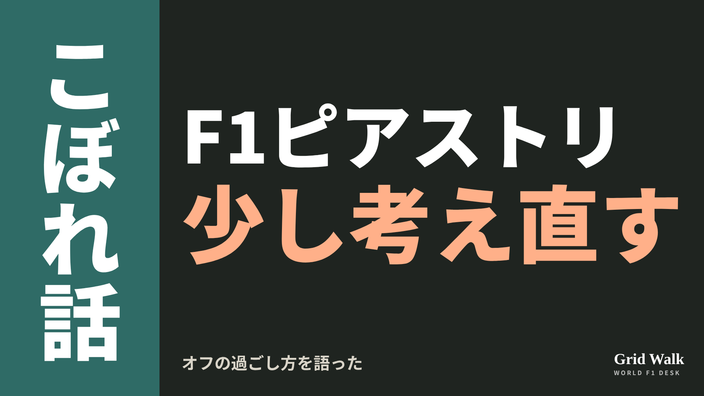<button class="cp dl" data-img="img/x_piastri-reset-rethink-20261115.png" data-name="x_piastri-reset-rethink-20261115.png">ダウンロード</button></li>
<li class="st"><div class="hd"><b>① noteをシェアするときの文</b></div><div class="bx" id="p7x0">今季7位のピアストリは、オフは「少しリセットして、少し考え直す」。今年の苦戦は2025年の失速とは無関係だと話しています。noteにまとめました #F1jp #ピアストリ</div><button class="cp" data-plain="p7x0">コピー</button></li>
<li class="st"><div class="hd"><b>② ①への返信</b></div><div class="bx" id="p7x1">ほかの海外記事も読みたい方は、F1 Grid Walkへ。
https://f1gridwalk.github.io/lens/piastri-reset-rethink-20261115/?utm_source=x&amp;utm_campaign=piastri-reset-rethink-20261115</div><button class="cp" data-plain="p7x1">コピー</button></li>
<li class="st"><div class="hd"><b>③ ②への返信</b></div><div class="bx" id="p7x2">毎日の海外F1ニュースは、日本語でこちらにまとめています。
https://f1gridwalk.github.io/</div><button class="cp" data-plain="p7x2">コピー</button></li>
</ol></section><section class="part" id="p8"><h2><span class="tag">OFF GRID</span>ハジャー「うまければ、うまい」　新人は早く慣れる時代という説に反論</h2><p class="sub">サイトに公開：12:27</p><ol class="steps">
<li class="st im"><div class="hd"><span class="no">1</span><b>見出し画像</b><em>画像</em></div>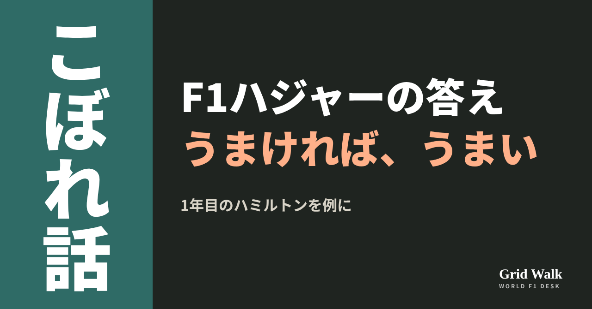<button class="cp dl" data-img="img/hadjar-good-is-good-20261115.png" data-name="hadjar-good-is-good-20261115_見出し画像.png">ダウンロード</button></li>
<li class="st"><div class="hd"><span class="no">2</span><b>タイトル</b></div><div class="bx" id="p8t">ハジャー「うまければ、うまい」　新人は早く慣れる時代という説に反論</div><button class="cp" data-plain="p8t">タイトルをコピー</button></li>
<li class="st"><div class="hd"><span class="no">3</span><b>本文</b></div><div class="bx tall" id="p8r"><p>今の新人は、シミュレーターや今どきの車のおかげで、昔より早くF1に慣れられる。そんな見方について聞かれたアイザック・ハジャーの答えは、短いものでした。イギリスのRacingNews365が11月14日に伝えています。</p><p>元の記事へのリンクと、2007年のハミルトンの成績の出典はサイトで → <a href="https://f1gridwalk.github.io/lens/hadjar-good-is-good-20261115/?utm_source=note&amp;utm_campaign=hadjar-good-is-good-20261115">https://f1gridwalk.github.io/lens/hadjar-good-is-good-20261115/?utm_source=note&amp;utm_campaign=hadjar-good-is-good-20261115</a></p><blockquote><p>「うまければ、うまい。僕はそう信じている」（ハジャー、RacingNews365／イギリス）</p></blockquote><h2>例に出したのは1年目のハミルトン</h2><p>ハジャーは、すぐに慣れた王者たちの名前を挙げました。</p><blockquote><p>「フェルナンド（アロンソ）、ルイス（ハミルトン）……キミ（アントネッリ）は世界王者だし、それより前の王者たちを見てもいい。彼らは、すぐに慣れた」（ハジャー、RacingNews365／イギリス）</p></blockquote><p>記事の別の箇所では、こうも話しています。</p><blockquote><p>「ルイスが1年目に何をしたか、見たよね」（同）</p></blockquote><p>F1公式の記録で、2007年のハミルトンを見てみます。マクラーレンでのデビュー戦、オーストラリアGPで3位。前にいたのは、優勝したフェラーリのキミ・ライコネンと、チームメイトのアロンソでした。その年はカナダ、アメリカ、ハンガリー、日本と4勝し、全17戦を終えて109点。王者ライコネンの110点に1点届かず、アロンソと同点でした。RacingNews365は、この年のハミルトンが最初のレースから、アロンソとライコネンを相手にタイトルを争ったと書いています。</p><p>同じ記事は、2年目で王者になった例も並べています。今季のアントネッリ、2008年のハミルトン、そして1997年にウィリアムズで王座を取ったジャック・ヴィルヌーヴです。F1公式の順位表でも、2008年はハミルトンが98点、1997年はヴィルヌーヴが81点で1位です。</p><blockquote><p>「能力があれば、車はそれほど関係ないと思う」（ハジャー、RacingNews365／イギリス）</p></blockquote><h2>変わったのは、すぐ慣れる人の数</h2><p>ただ、ハジャーは、昔と今がまったく同じだとも言っていません。</p><blockquote><p>「たぶん20年、30年前と比べて僕らが目にしているのは、すぐに慣れるドライバーの数だ」（ハジャー、RacingNews365／イギリス）</p></blockquote><blockquote><p>「ジュニアカテゴリーの質と競争の激しさが、たぶん少し高いんだと思う。だから全体のレベルも、たぶん少し上がっている。でも、昔だって、うまければすぐに表れたと僕は思う」（同）</p></blockquote><p>話している本人も、1年目から結果を残しています。F1公式サイトによると、ハジャーは2025年にレーシングブルズでデビュー。メルボルンではフォーメーションラップでクラッシュしてスタートできませんでしたが、ザントフォールトで初の表彰台に上がり、51点でチームメイトのローソン（38点）を上回りました。2026年はレッドブルに上がり、サンパウロGPを終えて8位の122点、今季の表彰台は3回です。</p><p>ハジャーにとってハミルトンは、憧れの人でもあります。メキシコでの2人のやりとりは、読み解き（https://f1gridwalk.github.io/topics/hadjar-dream-to-race-him/ ）で紹介しています。F2の結果についてのハジャーの考えは、コラム（https://f1gridwalk.github.io/lens/f2-champions-overlooked-20261111/ ）で。</p><p>編集部としては、ハジャーは道具の進歩を否定しているのではなく、下のカテゴリーで鍛えられた若手が増えたことは認めたうえで、速さそのものは昔も今もすぐ見える、と言っているのだと見ています。</p><p><strong>新人がすぐに速いのは、シミュレーターや車のおかげだと思いますか？　それとも、本人の力でしょうか？</strong></p><p>━━━━━━━━━━</p><p><strong>F1 Grid Walk では、世界のF1ニュースを毎日日本語でまとめています。</strong></p><p>海外の記事の要約を、毎日載せています。</p><p><a href="https://f1gridwalk.github.io/">https://f1gridwalk.github.io/</a></p><p>ほかの海外記事も読みたい方は、F1 Grid Walkへ。</p><p><a href="https://f1gridwalk.github.io/lens/hadjar-good-is-good-20261115/">https://f1gridwalk.github.io/lens/hadjar-good-is-good-20261115/</a></p><p>━━━━━━━━━━</p><p><a href="https://racingnews365.com/isack-hadjar-uses-lewis-hamilton-to-dismantle-contentious-f1-myth">出典：RacingNews365（イギリス）</a></p><p><a href="https://www.formula1.com/en/results/2007/drivers">出典：Formula1.com（イギリス）</a></p><p><a href="https://www.formula1.com/en/results/2007/races">出典：Formula1.com（イギリス）</a></p><p><a href="https://www.formula1.com/en/results.html/2007/races/808/australia/race-result.html">出典：Formula1.com（イギリス）</a></p><p><a href="https://www.formula1.com/en/results/2008/drivers">出典：Formula1.com（イギリス）</a></p><p><a href="https://www.formula1.com/en/results/1997/drivers">出典：Formula1.com（イギリス）</a></p><p><a href="https://www.formula1.com/en/results/2026/drivers">出典：Formula1.com（イギリス）</a></p><p><a href="https://www.formula1.com/en/drivers/isack-hadjar">出典：Formula1.com（イギリス）</a></p></div><button class="cp" data-rich="p8r">本文をコピー</button></li>
<li class="st"><div class="hd"><span class="no">4</span><b>ハッシュタグ</b></div><div class="bx" id="p8h">#F1 #F1jp #ハジャー #レッドブル #ハミルトン #ルーキー #シミュレーター #F1こぼれ話 #OFFGRID</div><button class="cp" data-plain="p8h">タグをコピー</button></li>
</ol><h3 class="xh">X</h3><ol class="steps">
<li class="st im"><div class="hd"><b>X用の画像</b><em>画像</em></div>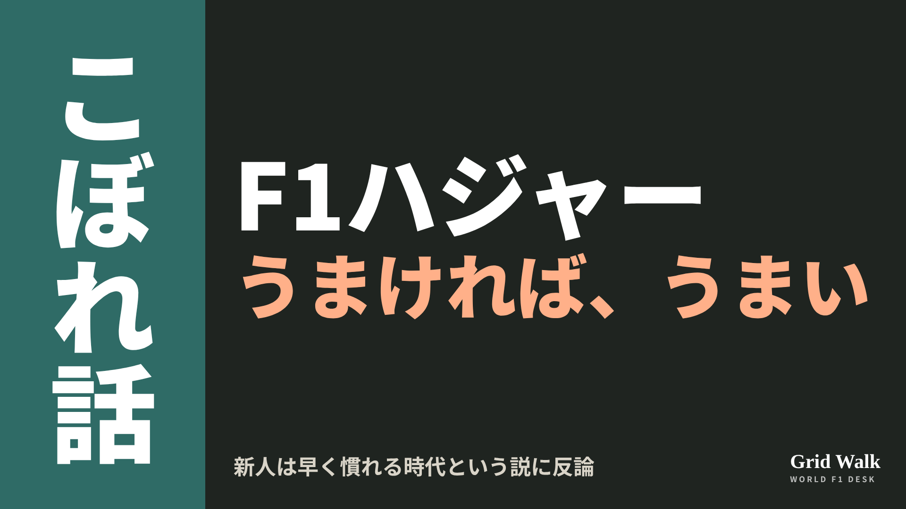<button class="cp dl" data-img="img/x_hadjar-good-is-good-20261115.png" data-name="x_hadjar-good-is-good-20261115.png">ダウンロード</button></li>
<li class="st"><div class="hd"><b>① noteをシェアするときの文</b></div><div class="bx" id="p8x0">今の新人は早く慣れる時代、という見方にハジャーが反論。「うまければ、うまい」。例に挙げたのは2007年のハミルトンでした。noteにまとめました #F1jp #ハジャー</div><button class="cp" data-plain="p8x0">コピー</button></li>
<li class="st"><div class="hd"><b>② ①への返信</b></div><div class="bx" id="p8x1">ほかの海外記事も読みたい方は、F1 Grid Walkへ。
https://f1gridwalk.github.io/lens/hadjar-good-is-good-20261115/?utm_source=x&amp;utm_campaign=hadjar-good-is-good-20261115</div><button class="cp" data-plain="p8x1">コピー</button></li>
<li class="st"><div class="hd"><b>③ ②への返信</b></div><div class="bx" id="p8x2">毎日の海外F1ニュースは、日本語でこちらにまとめています。
https://f1gridwalk.github.io/</div><button class="cp" data-plain="p8x2">コピー</button></li>
</ol></section><section class="part" id="p9"><h2><span class="tag">OFF GRID</span>ウォルフ、20歳の王者に「君にはあと25年ある」　一発屋にしないために</h2><p class="sub">サイトに公開：12:28</p><ol class="steps">
<li class="st im"><div class="hd"><span class="no">1</span><b>見出し画像</b><em>画像</em></div>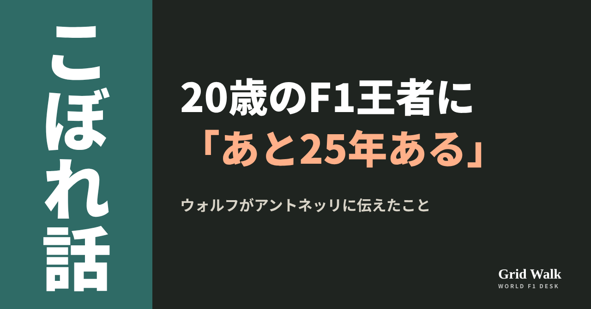<button class="cp dl" data-img="img/wolff-antonelli-stay-relevant-20261115.png" data-name="wolff-antonelli-stay-relevant-20261115_見出し画像.png">ダウンロード</button></li>
<li class="st"><div class="hd"><span class="no">2</span><b>タイトル</b></div><div class="bx" id="p9t">ウォルフ、20歳の王者に「君にはあと25年ある」　一発屋にしないために</div><button class="cp" data-plain="p9t">タイトルをコピー</button></li>
<li class="st"><div class="hd"><span class="no">3</span><b>本文</b></div><div class="bx tall" id="p9r"><p>王座を決めたアントネッリに、メルセデスのトト・ウォルフ代表が伝えたことを明かしました。そのひとつが「君にはあと25年ある」という言葉です。いつ王座を確信したのかについては、どのレースだったか思い出せない、というのが最初の答えでした。</p><p>元の記事へのリンクと、最年少記録の数字をまとめた解説はサイトで → <a href="https://f1gridwalk.github.io/lens/wolff-antonelli-stay-relevant-20261115/?utm_source=note&amp;utm_campaign=wolff-antonelli-stay-relevant-20261115">https://f1gridwalk.github.io/lens/wolff-antonelli-stay-relevant-20261115/?utm_source=note&amp;utm_campaign=wolff-antonelli-stay-relevant-20261115</a></p><h2>どのレースだったかは思い出せない</h2><p>イギリスのRacingNews365によると、ウォルフ代表は王座が決まったあと、同メディアなどの取材にこう話しています。</p><blockquote><p>「彼がやると思ったのがどのレースだったか、覚えるのが本当に苦手でね」（ウォルフ、RacingNews365／イギリス）</p></blockquote><blockquote><p>「特別な瞬間があったわけではないと思う。でも、彼がレースの週末を、次から次へと積み重ねられたときだ。何連勝したんだっけ？　5つだ。最終的には、私たちが車を用意できれば、彼はチャンピオンになると分かっていた」（同）</p></blockquote><p>どのレースかは思い出せないのに、5連勝の数は自分で問い直して答えています。その5連勝は、中国、日本、マイアミ、カナダ、モナコ。RacingNews365によると、初優勝から5連勝したドライバーはアントネッリが初めてで、モナコでは最年少でグランドスラム（ポールから全周回首位で優勝し、最速ラップも記録）を達成しました。モナコのあと、ハミルトンに66点差をつけていました。記事は、ウォルフ代表が王座を意識し始めたのは、このモナコのころだったと書いています。</p><p>王座が決まったのは11月1日、第19戦メキシコシティGP。F1公式サイトは、アントネッリを史上最年少の王者と書きました。RacingNews365によると、王座の前に9勝を挙げ、ほかに4勝以上したドライバーはいませんでした。最年少記録がどれだけ縮んだかは、DEEP GRID https://f1gridwalk.github.io/deep/younger-champions/ にまとめています。</p><h2>一生、存在感を保ち続けられるように</h2><p>話は、これから先のことに移りました。</p><blockquote><p>「彼に言ったのは、一緒に、君が一生ずっと存在感を保ち続けられるように努めなければならない、ということだ」（ウォルフ、RacingNews365／イギリス）</p></blockquote><blockquote><p>「君にはあと25年ある。これまでの誰よりも長く走ることになるから。何年もたってから振り返って、『君は一生、存在感を保ち続けた』と言いたい。そして、彼は一発屋ではない、とね」（同）</p></blockquote><blockquote><p>「でも、私たちは一緒に、彼が伸ばせるところを伸ばし、もっと良くなれるように取り組む。存在感を保ち続けたドライバーは多くないし、存在感を保ち続けた世界王者も多くない。それが、彼と一緒に成し遂げたいことだ」（同）</p></blockquote><h2>25年後は45歳</h2><p>20歳のアントネッリに25年を足すと、45歳。今季のグリッドでは、45歳のフェルナンド・アロンソが走っています（F1公式サイトのプロフィールでは1981年7月29日生まれ）。41歳のハミルトンは11月8日のサンパウロGPで400戦目を迎え、その長さについてのノリスの言葉はコラム https://f1gridwalk.github.io/lens/norris-hamilton-longevity-20261114/ で紹介しました。</p><p>王座のあと、ウォルフ代表がアントネッリを比べられることに慎重だった話は https://f1gridwalk.github.io/lens/wolff-not-frank-williams-20261111/ にあります。今回の言葉も、比べる相手ではなく、時間の長さで話しているのが特徴です。編集部としては、最年少で頂点に立ったからこそ、ウォルフ代表は何回勝つかより、どれだけ長く前にいられるかを語ったのだと見ています。</p><p><strong>アントネッリは25年後も、F1の第一線にいると思いますか？</strong></p><p>━━━━━━━━━━</p><p><strong>F1 Grid Walk では、世界のF1ニュースを毎日日本語でまとめています。</strong></p><p>海外の記事の要約を、毎日載せています。</p><p><a href="https://f1gridwalk.github.io/">https://f1gridwalk.github.io/</a></p><p>ほかの海外記事も読みたい方は、F1 Grid Walkへ。</p><p><a href="https://f1gridwalk.github.io/lens/wolff-antonelli-stay-relevant-20261115/">https://f1gridwalk.github.io/lens/wolff-antonelli-stay-relevant-20261115/</a></p><p>━━━━━━━━━━</p><p><a href="https://racingnews365.com/toto-wolff-reveals-when-he-knew-kimi-antonelli-would-win-2026-f1-title">出典：RacingNews365（イギリス）</a></p><p><a href="https://www.formula1.com/en/latest/article/mexico-city-lowdown-all-the-key-moments-as-antonelli-secures-maiden-title-and-verstappen-denies-ferrari-victory.3mPqECWFPlJsdg4jUOZUXz">出典：Formula 1 公式（国際）</a></p><p><a href="https://formula1.com/en/latest/article/antonelli-crowned-youngest-ever-f1-champion-as-verstappen-wins-eventful-mexico-city-grand-prix.xpMMeef0KmRURs9IDs3LH">出典：Formula 1 公式（国際）</a></p><p><a href="https://www.formula1.com/en/drivers/fernando-alonso">出典：Formula 1 公式（国際）</a></p></div><button class="cp" data-rich="p9r">本文をコピー</button></li>
<li class="st"><div class="hd"><span class="no">4</span><b>ハッシュタグ</b></div><div class="bx" id="p9h">#F1 #F1jp #ウォルフ #アントネッリ #メルセデス #最年少王者 #サンパウロGP #F1こぼれ話 #OFFGRID</div><button class="cp" data-plain="p9h">タグをコピー</button></li>
</ol><h3 class="xh">X</h3><ol class="steps">
<li class="st im"><div class="hd"><b>X用の画像</b><em>画像</em></div>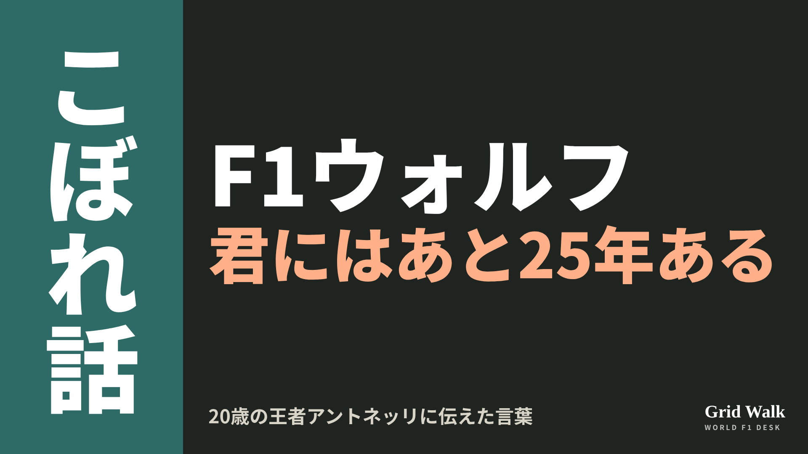<button class="cp dl" data-img="img/x_wolff-antonelli-stay-relevant-20261115.png" data-name="x_wolff-antonelli-stay-relevant-20261115.png">ダウンロード</button></li>
<li class="st"><div class="hd"><b>① noteをシェアするときの文</b></div><div class="bx" id="p9x0">史上最年少王者のアントネッリに、ウォルフ代表は「君にはあと25年ある」と伝えていました。noteにまとめました #F1jp #アントネッリ</div><button class="cp" data-plain="p9x0">コピー</button></li>
<li class="st"><div class="hd"><b>② ①への返信</b></div><div class="bx" id="p9x1">ほかの海外記事も読みたい方は、F1 Grid Walkへ。
https://f1gridwalk.github.io/lens/wolff-antonelli-stay-relevant-20261115/?utm_source=x&amp;utm_campaign=wolff-antonelli-stay-relevant-20261115</div><button class="cp" data-plain="p9x1">コピー</button></li>
<li class="st"><div class="hd"><b>③ ②への返信</b></div><div class="bx" id="p9x2">毎日の海外F1ニュースは、日本語でこちらにまとめています。
https://f1gridwalk.github.io/</div><button class="cp" data-plain="p9x2">コピー</button></li>
</ol></section></main><script>
function done(b,msg){const t=b.dataset.t||b.textContent;b.dataset.t=t;b.classList.add('ok');b.textContent=msg||'コピーしました';setTimeout(()=>{b.classList.remove('ok');b.textContent=t},2000)}
function selectEl(el){const r=document.createRange();r.selectNodeContents(el);const s=getSelection();s.removeAllRanges();s.addRange(r)}
async function rich(el,b){
  try{await navigator.clipboard.write([new ClipboardItem({'text/html':new Blob([el.innerHTML],{type:'text/html'}),'text/plain':new Blob([el.innerText],{type:'text/plain'})})]);done(b);return}catch(e){}
  selectEl(el);let ok=false;try{ok=document.execCommand('copy')}catch(e){}
  if(ok){getSelection().removeAllRanges();done(b)}else{done(b,'選択しました。コピーしてください')}}
async function plain(el,b){
  try{await navigator.clipboard.writeText(el.innerText);done(b);return}catch(e){}
  selectEl(el);let ok=false;try{ok=document.execCommand('copy')}catch(e){}
  if(ok){getSelection().removeAllRanges();done(b)}else{done(b,'選択しました。コピーしてください')}}
let dlns=null;(async()=>{try{dlns=await window.claude?.use?.("downloads")}catch(e){dlns=null}})();
async function img(src,b){
  b.dataset.t=b.dataset.t||b.textContent;
  if(!dlns){try{dlns=await window.claude?.use?.("downloads")}catch(e){}}
  if(!dlns){b.textContent='ダウンロードできませんでした';setTimeout(()=>{b.textContent=b.dataset.t},3500);return}
  try{const blob=await fetch(src).then(r=>r.blob());b.textContent='保存の確認を開いています…';
    await dlns.save({filename:b.dataset.name,data:blob});done(b,'ダウンロードしました')}
  catch(e){const c=e&&e.code;b.textContent=c==='declined'?'キャンセルしました':c==='rate_limited'?'少し待ってからもう一度押してください':'ダウンロードできませんでした';setTimeout(()=>{b.textContent=b.dataset.t},3500)}}
document.querySelectorAll('.cp').forEach(b=>b.addEventListener('click',()=>{
  if(b.dataset.rich)rich(document.getElementById(b.dataset.rich),b);
  else if(b.dataset.plain)plain(document.getElementById(b.dataset.plain),b);
  else img(b.dataset.img,b)}));
</script>